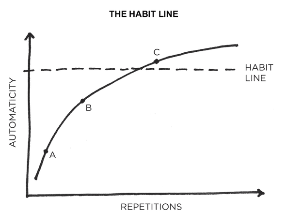

The 3rd Law: Make it Easy
The Habit Line

In the beginning (point A), a habit requires a good deal of effort and concentration to perform. After a few repetitions, (point B), it gets easier, but still requires some conscious attention. With enough practice (point C), the habit becomes more automatic than conscious. Beyond this threshold--the habit line--the behavior can be done more or less without thinking. A new habit has been formed.
Decisive Moments

The difference between a good day and a bad day is osten a few productive and healthy choices made at decisive moments. Each one is like a fork in the orad, and these choices stack up throughout the day and can ultimately lead to very different outcomes.
The Two-Minute Rule
The Two-Minute Rule states, "When you start a new habit, it should take less than two minutes to do."
The 3rd Law: Make it Easy
3.1 Reduce friction. Decrease the number of steps between you and your good habits.
3.2 Prime the environment. Prepare your environment to make future actions easier.
3.3 Master the decisive moment. Optimize the small choices that deliver outsized impact.
3.4 Use the Two-Minute Rule. Downscale your habits until they can be done in two minutes or less.
3.5 Automate your habits. Invest in technology and onetime purchase that lock in future behavior.
Inversion of the 3rd Law - 3.6 Increase friction. Increase the number of steps between you and your bad habits.
Inversion of the 3rd Law - 3.7 Use a commitment device. Restrict your future choices to the ones that benefit you.
Home Next Back